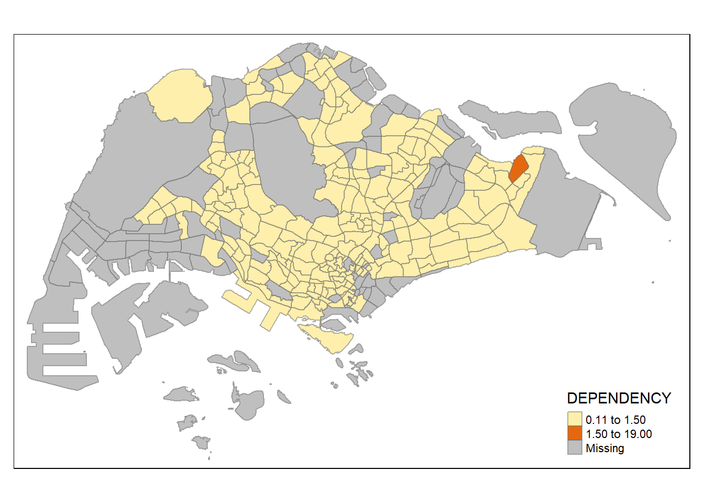
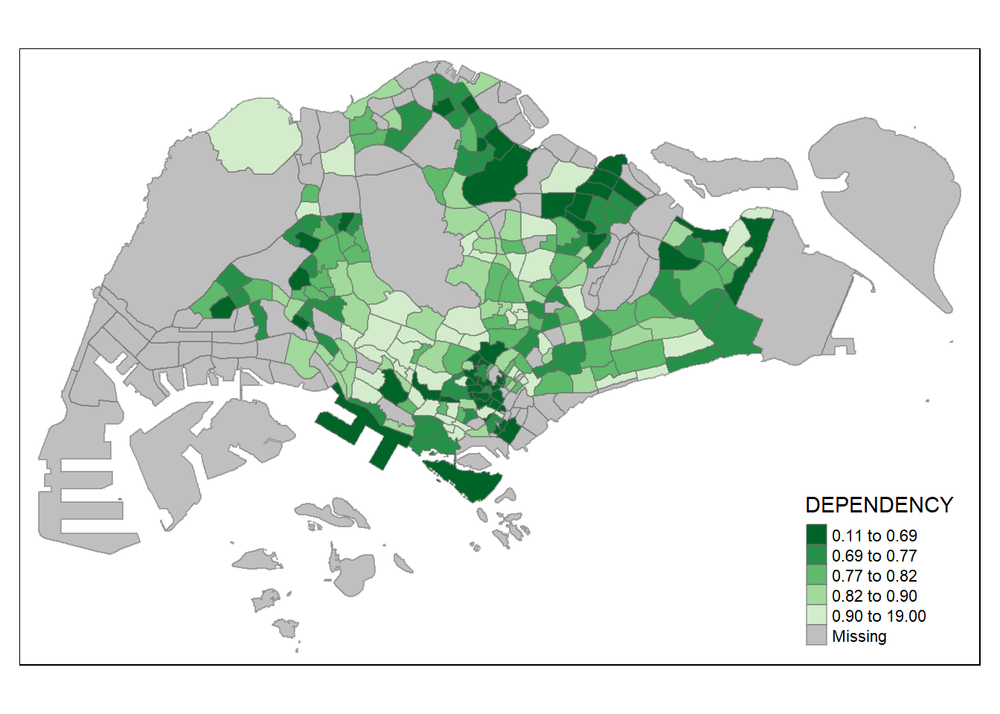
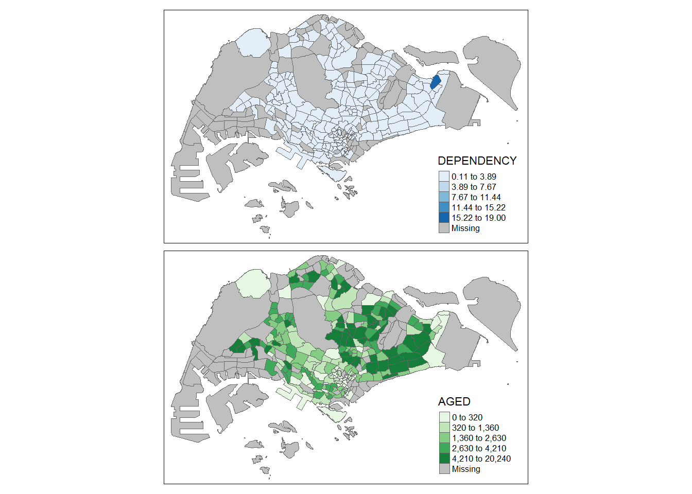
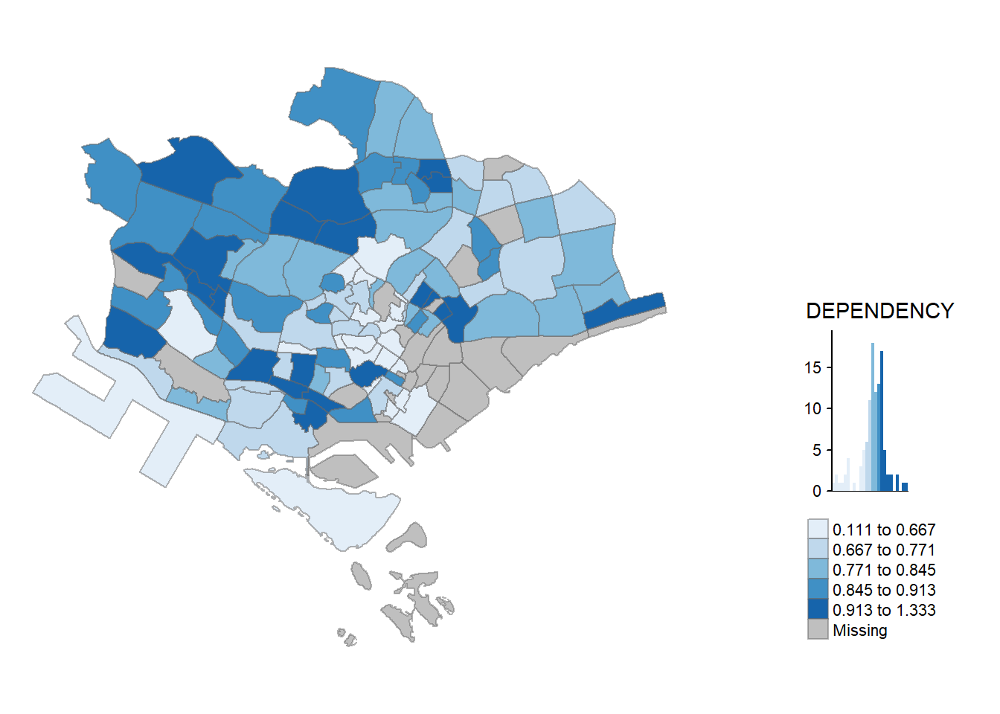

pacman::p_load(sf, tidyverse, tmap)Hands-on Exercise 1: Choropleth Mapping

1 Overview
In this hands-on exercise, we will continue on Exploratory Data Analysis, specifically using Choropleth Mapping
Choropleth mapping is a way to represent regions, like countries or states, by using patterns or colors to show different values. For instance, a social scientist might use a choropleth map to display where the older population is located in Singapore based on the Master Plan 2014 Subzone Boundary.
In this chapter, you’ll discover how to create accurate and meaningful choropleth maps using an R package called tmap.
2 Import The Libraries
The code chunk below install and load sf, tidyverse and tmap packages into R environment.
3 Importing The Data
We’ll use two sets of information to make the choropleth map:
Master Plan 2014 Subzone Boundary (Web): This is a map file that shows the shape of different areas in Singapore, specifically at the planning subzone level. The data can be downloaded from Singapore Government
Singapore Residents Data (June 2011-2020): This is a list of information about people living in Singapore, like how many people are in different age groups, their gender, and the type of homes they live in. This data is in a CSV file (respopagesextod2011to2020.csv). The data can be downloaded from the Department of Statistics, Singapore. Even though it doesn’t have actual location coordinates, it has fields called PA and SZ that can help match it to the shapes in the MP14_SUBZONE_WEB_PL file.
The code below does the following 1. uses the st_read() function from the sf package to bring in the MP14_SUBZONE_WEB_PL shapefile into R, and import it as a simple feature data frame named mpsz. 2. display the data frame by calling mpsz
mpsz <- st_read(dsn = "../data/geospatial", layer = "MP14_SUBZONE_WEB_PL")Reading layer `MP14_SUBZONE_WEB_PL' from data source
`C:\ameernoor\ISSS624\data\geospatial' using driver `ESRI Shapefile'
Simple feature collection with 323 features and 15 fields
Geometry type: MULTIPOLYGON
Dimension: XY
Bounding box: xmin: 2667.538 ymin: 15748.72 xmax: 56396.44 ymax: 50256.33
Projected CRS: SVY21mpszSimple feature collection with 323 features and 15 fields
Geometry type: MULTIPOLYGON
Dimension: XY
Bounding box: xmin: 2667.538 ymin: 15748.72 xmax: 56396.44 ymax: 50256.33
Projected CRS: SVY21
First 10 features:
OBJECTID SUBZONE_NO SUBZONE_N SUBZONE_C CA_IND PLN_AREA_N
1 1 1 MARINA SOUTH MSSZ01 Y MARINA SOUTH
2 2 1 PEARL'S HILL OTSZ01 Y OUTRAM
3 3 3 BOAT QUAY SRSZ03 Y SINGAPORE RIVER
4 4 8 HENDERSON HILL BMSZ08 N BUKIT MERAH
5 5 3 REDHILL BMSZ03 N BUKIT MERAH
6 6 7 ALEXANDRA HILL BMSZ07 N BUKIT MERAH
7 7 9 BUKIT HO SWEE BMSZ09 N BUKIT MERAH
8 8 2 CLARKE QUAY SRSZ02 Y SINGAPORE RIVER
9 9 13 PASIR PANJANG 1 QTSZ13 N QUEENSTOWN
10 10 7 QUEENSWAY QTSZ07 N QUEENSTOWN
PLN_AREA_C REGION_N REGION_C INC_CRC FMEL_UPD_D X_ADDR
1 MS CENTRAL REGION CR 5ED7EB253F99252E 2014-12-05 31595.84
2 OT CENTRAL REGION CR 8C7149B9EB32EEFC 2014-12-05 28679.06
3 SR CENTRAL REGION CR C35FEFF02B13E0E5 2014-12-05 29654.96
4 BM CENTRAL REGION CR 3775D82C5DDBEFBD 2014-12-05 26782.83
5 BM CENTRAL REGION CR 85D9ABEF0A40678F 2014-12-05 26201.96
6 BM CENTRAL REGION CR 9D286521EF5E3B59 2014-12-05 25358.82
7 BM CENTRAL REGION CR 7839A8577144EFE2 2014-12-05 27680.06
8 SR CENTRAL REGION CR 48661DC0FBA09F7A 2014-12-05 29253.21
9 QT CENTRAL REGION CR 1F721290C421BFAB 2014-12-05 22077.34
10 QT CENTRAL REGION CR 3580D2AFFBEE914C 2014-12-05 24168.31
Y_ADDR SHAPE_Leng SHAPE_Area geometry
1 29220.19 5267.381 1630379.3 MULTIPOLYGON (((31495.56 30...
2 29782.05 3506.107 559816.2 MULTIPOLYGON (((29092.28 30...
3 29974.66 1740.926 160807.5 MULTIPOLYGON (((29932.33 29...
4 29933.77 3313.625 595428.9 MULTIPOLYGON (((27131.28 30...
5 30005.70 2825.594 387429.4 MULTIPOLYGON (((26451.03 30...
6 29991.38 4428.913 1030378.8 MULTIPOLYGON (((25899.7 297...
7 30230.86 3275.312 551732.0 MULTIPOLYGON (((27746.95 30...
8 30222.86 2208.619 290184.7 MULTIPOLYGON (((29351.26 29...
9 29893.78 6571.323 1084792.3 MULTIPOLYGON (((20996.49 30...
10 30104.18 3454.239 631644.3 MULTIPOLYGON (((24472.11 29...Note that only the first ten records are displayed. By default, R shows a summary of only the first few rows to minimize resource usage and avoid overwhelming the user. To see more rows, you can use functions like head() and specify the n parameter, e.g. head(mpsz, n = 20) to display the first 20 rows.
Next, we’re going to bring in the respopagsex2011to2020.csv file into RStudio and store it in a data table named popdata. We’ll do this using the read_csv() function from the readr package, as you can see in the code snippet below.
popdata <- read_csv("../data/aspatial/respopagesextod2011to2020.csv.gz")4 Data Preparation
Before making a special map, you need to create a table with data for the year 2020. This table should have information about different areas (PA, SZ) and various age groups like YOUNG (0-4 to 20-24), ECONOMY ACTIVE (25-29 to 60-64), AGED (65 and above), TOTAL (all age groups), and DEPENDENCY (the ratio of young and aged people to the economy-active group).
We’ll be using some functions to shape our data the way we want: - pivot_wider() from tidyr package - mutate(), filter(), group_by(), and select() from dplyr package
The code will do the following steps in order: - Filter the data: It only keeps the rows where the Time column is 2020. - Group the data: It groups the data by PA (Planning Area), SZ (Subzone), and AG (Age Group). - Summarize the data: It calculates the sum of the Pop column for each group. - Reshape the data: It spreads the data wide, turning the Age Group values into separate columns. - Create new columns: It calculates the YOUNG, ECONOMY ACTIVE, AGED, TOTAL, and DEPENDENCY values based on the grouped and summarized data. - Select the columns: It picks the specific columns to be kept in the final data table.
Code
# Filter the 'popdata' dataset for the year 2020
popdata2020 <- popdata %>%
# Keep only records where 'Time' is equal to 2020
filter(Time == 2020) %>%
# Group the data by 'PA', 'SZ', and 'AG'
group_by(PA, SZ, AG) %>%
# Summarize the data by calculating the sum of 'Pop' for each group
summarise(`POP` = sum(`Pop`)) %>%
# Ungroup the data to remove grouping constraints
ungroup() %>%
# Reshape the data by widening it using 'AG' as column names and 'POP' as values
pivot_wider(names_from = AG, values_from = POP) %>%
# Create a new column 'YOUNG' by summing specific columns
mutate(YOUNG = rowSums(.[3:6]) + rowSums(.[12])) %>%
# Create a new column 'ECONOMY ACTIVE' by summing specific columns
mutate(`ECONOMY ACTIVE` = rowSums(.[7:11]) + rowSums(.[13:15])) %>%
# Create a new column 'AGED' by summing specific columns
mutate(`AGED` = rowSums(.[16:21])) %>%
# Create a new column 'TOTAL' by summing specific columns
mutate(`TOTAL` = rowSums(.[3:21])) %>%
# Create a new column 'DEPENDENCY' by calculating a ratio
mutate(`DEPENDENCY` = (`YOUNG` + `AGED`) / `ECONOMY ACTIVE`) %>%
# Select specific columns for the final dataset
select(`PA`, `SZ`, `YOUNG`, `ECONOMY ACTIVE`, `AGED`, `TOTAL`, `DEPENDENCY`)
# Display a summary of the 'popdata2020' dataset
glimpse(popdata2020)Rows: 332
Columns: 7
$ PA <chr> "Ang Mo Kio", "Ang Mo Kio", "Ang Mo Kio", "Ang Mo Kio…
$ SZ <chr> "Ang Mo Kio Town Centre", "Cheng San", "Chong Boon", …
$ YOUNG <dbl> 1440, 6640, 6150, 5540, 2100, 3960, 2220, 4690, 0, 12…
$ `ECONOMY ACTIVE` <dbl> 2610, 15460, 13950, 12090, 3410, 8420, 4200, 11450, 0…
$ AGED <dbl> 760, 6050, 6470, 5120, 1310, 3610, 1530, 5100, 0, 750…
$ TOTAL <dbl> 4810, 28150, 26570, 22750, 6820, 15990, 7950, 21240, …
$ DEPENDENCY <dbl> 0.8429119, 0.8208279, 0.9046595, 0.8817204, 1.0000000…Export the Dataset
Code
# Install and load the 'writexl' package if not already installed
if (!requireNamespace("writexl", quietly = TRUE)) {
install.packages("writexl")
}
# Load the 'writexl' package
library(writexl)
# Export 'popdata2020' dataset to an Excel file named 'popdata2020.xlsx'
write_xlsx(popdata2020, path = "../data/aspatial/popdata2020.xlsx")Before we can combine our geographic and population data, we need to make sure the values in the PA and SZ fields are all in uppercase. This is because these values have a mix of upper- and lowercase, while SUBZONE_N and PLN_AREA_N are all in uppercase.
the following code will change the values in the PA and SZ columns to uppercase. After that, it will filters out rows where the ECONOMY ACTIVE column is greater than 0.
Code
popdata2020 <- popdata2020 %>%
mutate_at(.vars = vars(PA, SZ),
.funs = funs(toupper)) %>%
filter(`ECONOMY ACTIVE` > 0)
glimpse(popdata2020)Rows: 234
Columns: 7
$ PA <chr> "ANG MO KIO", "ANG MO KIO", "ANG MO KIO", "ANG MO KIO…
$ SZ <chr> "ANG MO KIO TOWN CENTRE", "CHENG SAN", "CHONG BOON", …
$ YOUNG <dbl> 1440, 6640, 6150, 5540, 2100, 3960, 2220, 4690, 1220,…
$ `ECONOMY ACTIVE` <dbl> 2610, 15460, 13950, 12090, 3410, 8420, 4200, 11450, 2…
$ AGED <dbl> 760, 6050, 6470, 5120, 1310, 3610, 1530, 5100, 750, 4…
$ TOTAL <dbl> 4810, 28150, 26570, 22750, 6820, 15990, 7950, 21240, …
$ DEPENDENCY <dbl> 0.8429119, 0.8208279, 0.9046595, 0.8817204, 1.0000000…Now, we’re using left_join() from the dplyr package to connect our geographical data and the population attribute table. This connection is made using planning subzone names, specifically SUBZONE_N in the geographical data and SZ in the attribute table, as the common identifier.
Code
mpsz_pop2020 <- left_join(mpsz, popdata2020,
by = c("SUBZONE_N" = "SZ"))
glimpse(mpsz_pop2020)Rows: 323
Columns: 22
$ OBJECTID <int> 1, 2, 3, 4, 5, 6, 7, 8, 9, 10, 11, 12, 13, 14, 15, 16…
$ SUBZONE_NO <int> 1, 1, 3, 8, 3, 7, 9, 2, 13, 7, 12, 6, 1, 5, 1, 1, 3, …
$ SUBZONE_N <chr> "MARINA SOUTH", "PEARL'S HILL", "BOAT QUAY", "HENDERS…
$ SUBZONE_C <chr> "MSSZ01", "OTSZ01", "SRSZ03", "BMSZ08", "BMSZ03", "BM…
$ CA_IND <chr> "Y", "Y", "Y", "N", "N", "N", "N", "Y", "N", "N", "N"…
$ PLN_AREA_N <chr> "MARINA SOUTH", "OUTRAM", "SINGAPORE RIVER", "BUKIT M…
$ PLN_AREA_C <chr> "MS", "OT", "SR", "BM", "BM", "BM", "BM", "SR", "QT",…
$ REGION_N <chr> "CENTRAL REGION", "CENTRAL REGION", "CENTRAL REGION",…
$ REGION_C <chr> "CR", "CR", "CR", "CR", "CR", "CR", "CR", "CR", "CR",…
$ INC_CRC <chr> "5ED7EB253F99252E", "8C7149B9EB32EEFC", "C35FEFF02B13…
$ FMEL_UPD_D <date> 2014-12-05, 2014-12-05, 2014-12-05, 2014-12-05, 2014…
$ X_ADDR <dbl> 31595.84, 28679.06, 29654.96, 26782.83, 26201.96, 253…
$ Y_ADDR <dbl> 29220.19, 29782.05, 29974.66, 29933.77, 30005.70, 299…
$ SHAPE_Leng <dbl> 5267.381, 3506.107, 1740.926, 3313.625, 2825.594, 442…
$ SHAPE_Area <dbl> 1630379.27, 559816.25, 160807.50, 595428.89, 387429.4…
$ PA <chr> NA, "OUTRAM", "SINGAPORE RIVER", "BUKIT MERAH", "BUKI…
$ YOUNG <dbl> NA, 1200, 0, 3150, 2900, 3340, 3130, 0, 1290, 50, NA,…
$ `ECONOMY ACTIVE` <dbl> NA, 2860, 40, 6900, 6020, 6800, 7700, 50, 2600, 140, …
$ AGED <dbl> NA, 2120, 10, 3320, 1740, 3420, 3610, 10, 610, 60, NA…
$ TOTAL <dbl> NA, 6180, 50, 13370, 10660, 13560, 14440, 60, 4500, 2…
$ DEPENDENCY <dbl> NA, 1.1608392, 0.2500000, 0.9376812, 0.7707641, 0.994…
$ geometry <MULTIPOLYGON [m]> MULTIPOLYGON (((31495.56 30..., MULTIPOL…left_join() is used with mpsz simple feature data frame as the left data table to ensure that the output will be a simple features data frame.
Lastly, the write_rds() function is used to save our combined data (stored in the mpsz_pop2020 data frame) into an RDS file.
write_rds(mpsz_pop2020, "../data/rds/mpszpop2020.rds")An RDS file is a binary file format used in R to store single R objects. It stands for R Data Store. This file format is efficient for saving and loading R objects because it preserves the object’s structure, including its data type, attributes, and metadata. Unlike other formats like CSV or Excel, RDS files are tailored for R-specific objects and are typically smaller in size. When you save an object as an RDS file, you can later load it back into R using the read_rds() function to retrieve the exact R object with all its properties intact. It’s a handy way to store and share R data without losing any of the specific characteristics of the objects.
5 Choropleth Mapping Geospatial Data using tmap
There are two ways to make a thematic map using tmap: - Quick Approach: Use qtm() to swiftly draw a choropleth map. - Customizable Approach: Create a highly customizable thematic map by using tmap elements.
5.1 Plotting choropleth map using qtm
The fastest way to draw a choropleth map using tmap is with qtm(). It’s straightforward and produces a solid default visualization in many cases.
The following code snippet will generate a standard choropleth map.
tmap_mode("plot")
qtm(mpsz_pop2020, fill = "DEPENDENCY")
5.2 Creating a choropleth map by using tmap’s elements
Despite its quick and easy way of making a choropleth map, the limitation of using qtm() is that it makes it challenging to control the appearance of individual map layers. For a high-quality cartographic choropleth map, it’s better to use tmap’s drawing elements.
The next code will do the following steps: - tm_shape(): This sets the spatial object (mpsz_pop2020) to be used in the map.
tm_fill(): It fills the polygons with colors based on the “DEPENDENCY” column, using the quantile method and a blue color palette.tm_layout(): Defines the layout elements, including the main title, legend settings, frame, and other stylistic elements.tm_borders(),tm_compass(),tm_scale_bar(),tm_grid(): These add map embellishments such as borders, compass, scale bar, and grid.tm_credits(): Adds a text credit at the bottom left of the map, mentioning the data sources.
Code
tm_shape(mpsz_pop2020)+
tm_fill("DEPENDENCY",
style = "quantile",
palette = "Blues",
title = "Dependency ratio") +
tm_layout(main.title = "Distribution of Dependency Ratio by planning subzone",
main.title.position = "center",
main.title.size = 1.2,
legend.height = 0.45,
legend.width = 0.35,
frame = TRUE) +
tm_borders(alpha = 0.5) +
tm_compass(type="8star", size = 2) +
tm_scale_bar() +
tm_grid(alpha =0.2) +
tm_credits("Source: Planning Sub-zone boundary from Urban Redevelopment Authorithy (URA)\n and Population data from Department of Statistics DOS",
position = c("left", "bottom"))
each of the tmap functions that are used to create the plot can be seen in the following panel.
tm_shape(mpsz_pop2020) +
tm_polygons()
tm_shape(mpsz_pop2020)+
tm_polygons("DEPENDENCY")
- The default interval binning used to draw the choropleth map is called “pretty”.
- The default colour scheme used is YlOrRd of ColorBrewer.
- By default, Missing value will be shaded in grey.
without setting the border, the planning subzones will not have any boundary if the dependency value is the same
tm_shape(mpsz_pop2020)+
tm_fill("DEPENDENCY")
Parameters of tm_border(): - alpha = transparency. the default value is 1 (not transparent) - col = border colour, - lwd = border line width. The default is 1, and - lty = border line type. The default is “solid”.
tm_shape(mpsz_pop2020)+
tm_fill("DEPENDENCY") +
tm_borders(lwd = 0.1, alpha = 1)
5.3 Data Classification methods of tmap
Choropleth maps usually use different ways to group data, and the goal is to organize a bunch of observations into specific ranges or groups.
tmap offers ten methods to classify data, including fixed, sd, equal, pretty (default), quantile, kmeans, hclust, bclust, fisher, and jenks.
To pick a data classification method, you use the style argument in tm_fill() or tm_polygons().
5.3.1 Plotting choropleth maps with built-in classification methods
The following panel will compare various choropleth maps with built-in classification methods and constant n = 5
Code
tm_shape(mpsz_pop2020)+
tm_fill("DEPENDENCY",
n = 5,
style = "jenks") +
tm_borders(alpha = 0.5)
Code
tm_shape(mpsz_pop2020)+
tm_fill("DEPENDENCY",
n = 5,
style = "equal") +
tm_borders(alpha = 0.5)
Using equal range data classification, the map is not too informative as the data is skewed
Code
tm_shape(mpsz_pop2020)+
tm_fill("DEPENDENCY",
n = 5,
style = "sd") +
tm_borders(alpha = 0.5)
Code
tm_shape(mpsz_pop2020)+
tm_fill("DEPENDENCY",
n = 5,
style = "pretty") +
tm_borders(alpha = 0.5)
Code
tm_shape(mpsz_pop2020)+
tm_fill("DEPENDENCY",
n = 5,
style = "quantile") +
tm_borders(alpha = 0.5)
Code
tm_shape(mpsz_pop2020)+
tm_fill("DEPENDENCY",
n = 5,
style = "hclust") +
tm_borders(alpha = 0.5)
Code
tm_shape(mpsz_pop2020)+
tm_fill("DEPENDENCY",
n = 5,
style = "fisher") +
tm_borders(alpha = 0.5)Code
tm_shape(mpsz_pop2020)+
tm_fill("DEPENDENCY",
n = 5,
style = "fisher") +
tm_borders(alpha = 0.5)
Various method of classification can give highly different result. One of the main contributor is due to skewness and presence of outliers in the data. Classification method which is insensitive to it will give monotonous map, where only a few region have different color, and vice versa. As an analyst, domain knowledge is required to decide which classification method is the most appropriate (i.e. whether small differences between the Dependency data matters). Ultimately, the method chosen should be able to support the best decision making.
The following panel will compare various choropleth maps with different number of classes
Code
tm_shape(mpsz_pop2020)+
tm_fill("DEPENDENCY",
n = 2,
style = "jenks") +
tm_borders(alpha = 0.5)
Code
tm_shape(mpsz_pop2020)+
tm_fill("DEPENDENCY",
n = 6,
style = "equal") +
tm_borders(alpha = 0.5)Code
tm_shape(mpsz_pop2020)+
tm_fill("DEPENDENCY",
n = 10,
style = "equal") +
tm_borders(alpha = 0.5)Code
tm_shape(mpsz_pop2020)+
tm_fill("DEPENDENCY",
n = 20,
style = "equal") +
tm_borders(alpha = 0.5)
similar to classification method, number of classes could matter in showing differences between area. with n set as 2, even jenks method become monotonous, revealing the outlier area. on the other hand, with n set as high as 20, even the equal method start to show differences between region, albeit subtle (due to high degree of skewness/presence of extreme outliers)
5.3.2 Plotting choropleth map with custom break
the automated break calculation in previous method can be overriden by explicitly set the break arguments.
before starting, the following code will show descriptive statistics to be used for break reference.
summary(mpsz_pop2020$DEPENDENCY) Min. 1st Qu. Median Mean 3rd Qu. Max. NA's
0.1111 0.7147 0.7866 0.8585 0.8763 19.0000 92 with reference to the summary statistics result, the break point is set at 0.60, 0.70, 0.80, and 0.90. The arguments also requires to include minimum and maximum value.
Code
tm_shape(mpsz_pop2020)+
tm_fill("DEPENDENCY",
breaks = c(0, 0.60, 0.70, 0.80, 0.90, 1.00)) +
tm_borders(alpha = 0.5)
5.4 Colour Scheme
The color scheme in tmap can be customized using user-defined or predefined color ramps from the RColorBrewer package.
To use a ColorBrewer palette, you assign the desired color to the palette argument of tm_fill(). If you want to change the color, you can do so by specifying the palette in the code.
Code
tm_shape(mpsz_pop2020)+
tm_fill("DEPENDENCY",
n = 6,
style = "quantile",
palette = "Blues") +
tm_borders(alpha = 0.5)
The above choropleth map is shaded in green. To reverse the color shade use “-” prefix.
Code
tm_shape(mpsz_pop2020)+
tm_fill("DEPENDENCY",
style = "quantile",
palette = "-Greens") +
tm_borders(alpha = 0.5)
The colour scheme also changed with the new setting.
5.5 Map Layouts
Map layouts refer to combining all map elements into a cohesive map, including objects, title, scale bar, compass, margins, aspect ratios, color settings, and data classification methods. In tmap, various legend options are available to change the placement, format, and appearance of the legend. You can use tm_fill() along with tm_layout() to customize the legend based on your preferences. To change the style of layout, use tmap_style(). The following panel show how the various options are used.
Code
tm_shape(mpsz_pop2020)+
tm_fill("DEPENDENCY",
style = "jenks",
palette = "Blues",
legend.hist = TRUE,
legend.is.portrait = TRUE,
legend.hist.z = 0.1) +
tm_layout(main.title = "Distribution of Dependency Ratio by planning subzone \n(Jenks classification)",
main.title.position = "center",
main.title.size = 1,
legend.height = 0.45,
legend.width = 0.35,
legend.outside = FALSE,
legend.position = c("right", "bottom"),
frame = FALSE) +
tm_borders(alpha = 0.5)
Code
tm_shape(mpsz_pop2020)+
tm_fill("DEPENDENCY",
style = "quantile",
palette = "-Greens") +
tm_borders(alpha = 0.5) +
tmap_style("classic")
Code
tm_shape(mpsz_pop2020)+
tm_fill("DEPENDENCY",
style = "quantile",
palette = "Blues",
title = "No. of persons") +
tm_layout(main.title = "Distribution of Dependency Ratio \nby planning subzone",
main.title.position = "center",
main.title.size = 1.2,
legend.height = 0.45,
legend.width = 0.35,
frame = TRUE) +
tm_borders(alpha = 0.5) +
tm_compass(type="8star", size = 2) +
tm_scale_bar(width = 0.15) +
tm_grid(lwd = 0.1, alpha = 0.2) +
tm_credits("Source: Planning Sub-zone boundary from Urban Redevelopment Authorithy (URA)\n and Population data from Department of Statistics DOS",
position = c("left", "bottom"))
reset the tmap setting to default style.
tmap_style("white")5.6 Drawing Small Multiple Choropleth Maps
Small multiple choropleth maps, or facet maps, display many maps side-by-side or stacked vertically. tmap allows you to create small multiples in different ways, such as assigning multiple values to aesthetic arguments or using tm_facets().
You can also create small multiples by defining a group-by variable in tm_facets() or by creating multiple stand-alone maps with tmap_arrange(). Each method offers flexibility in visualizing spatial relationships.
Code
tm_shape(mpsz_pop2020)+
tm_fill(c("YOUNG", "AGED"),
style = "equal",
palette = "Blues") +
tm_layout(legend.position = c("right", "bottom")) +
tm_borders(alpha = 0.5) +
tmap_style("white")
Code
tm_shape(mpsz_pop2020)+
tm_polygons(c("DEPENDENCY","AGED"), style = c("equal", "quantile"), palette = list("Blues","Greens")) + tm_layout(legend.position = c("right", "bottom"))
Code
tm_shape(mpsz_pop2020) +
tm_fill("DEPENDENCY",
style = "quantile",
palette = "Blues",
thres.poly = 0) +
tm_facets(by="REGION_N",
free.coords=TRUE,
drop.shapes=TRUE) +
tm_layout(legend.show = FALSE,
title.position = c("center", "center"),
title.size = 20) +
tm_borders(alpha = 0.5)
Code
youngmap <- tm_shape(mpsz_pop2020) + tm_polygons("YOUNG", style = "quantile", palette = "Blues")
agedmap <- tm_shape(mpsz_pop2020) + tm_polygons("AGED", style = "quantile", palette = "Blues")
tmap_arrange(youngmap, agedmap, asp=1, ncol=2)
5.7 Mapping Spatial Object Meeting a Selection Criterion
Instead of creating small multiple choropleth maps, you can use selection functions to map spatial objects meeting specific criteria. This allows you to focus on specific regions or areas in the map based on your selection criterion. The following code choose Central Region as example
Code
tm_shape(mpsz_pop2020[mpsz_pop2020$REGION_N=="CENTRAL REGION", ])+
tm_fill("DEPENDENCY",
style = "quantile",
palette = "Blues",
legend.hist = TRUE,
legend.is.portrait = TRUE,
legend.hist.z = 0.1) +
tm_layout(legend.outside = TRUE,
legend.height = 0.45,
legend.width = 5.0,
legend.position = c("right", "bottom"),
frame = FALSE) +
tm_borders(alpha = 0.5)